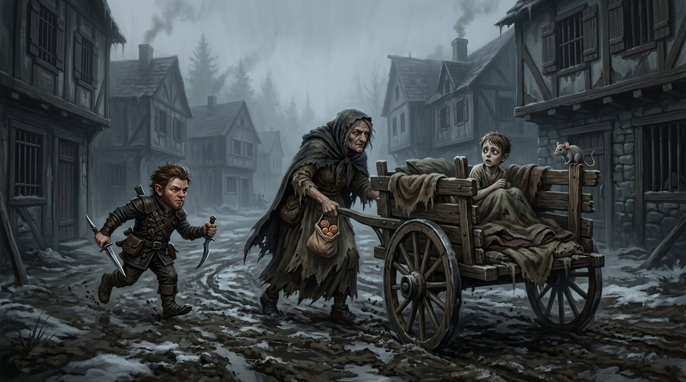
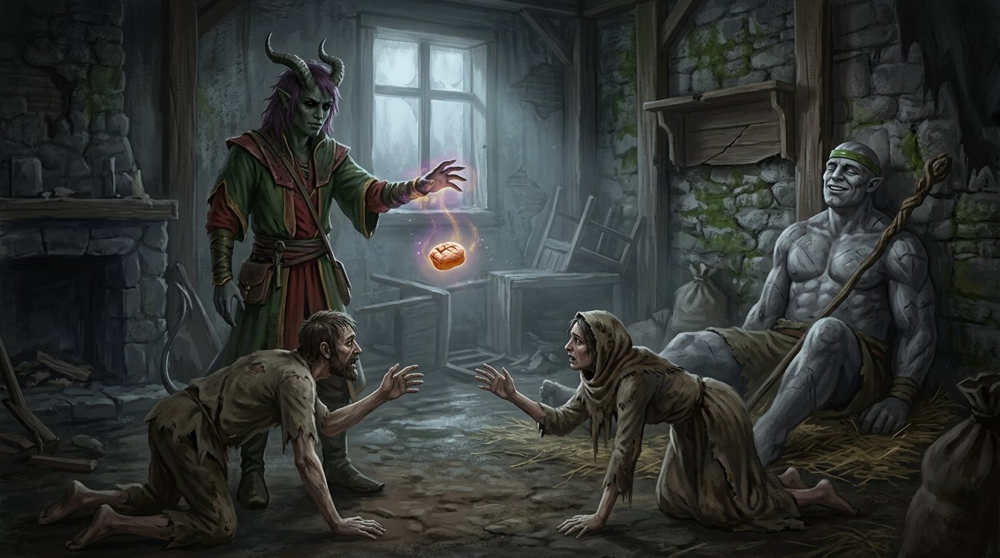
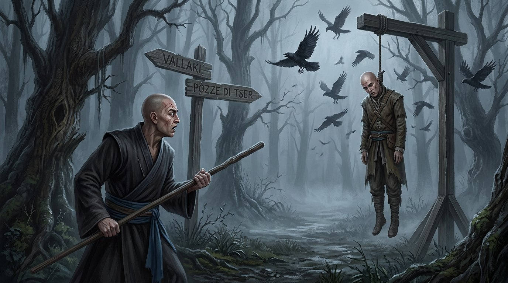
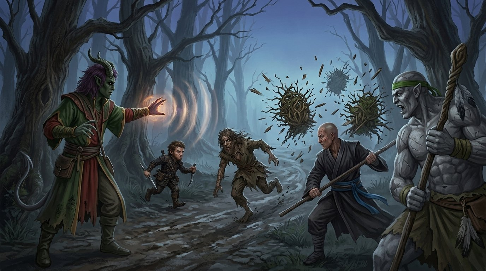
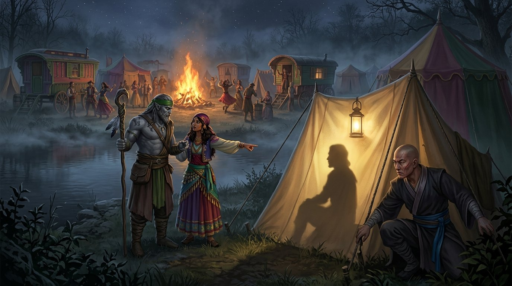

Il volto sulla forca
Il silenzio di Doru
Nella chiesa la luce delle candele trema sulle pareti scrostate. Il gruppo è dentro, accanto a padre Donavich; Bastian invece è rimasto fuori. È Zane, che non si lascia sfuggire niente, ad accorgersi che il prete va a scambiare qualche parola sottovoce con il paladino. Poco dopo, di Bastian non c'è più traccia.
Poi cala il silenzio. La voce che saliva dal pavimento, quella che chiedeva al padre qualcosa da mangiare, tace di colpo. Padre Donavich si lascia andare ai piedi dell'altare e resta lì, disteso, senza una parola.
Quando i compagni ritrovano Bastian, lui non cerca scuse. È stato il prete a chiederglielo, dice. E lui ha ucciso Doru.
Ismark
Non c'è il tempo di digerire la notizia. Le porte si spalancano ed entra Ismark, trafelato, il viso e le braccia segnati da graffi. Stava tenendo d'occhio una casa insieme ai fratelli Alexei, racconta, quando ne sono usciti dei pipistrelli e gli si sono avventati addosso.
Per il viaggio verso Vallaki, consiglia, conviene tornare alla taverna: lì qualcuno saprà dare indicazioni più precise. E per la notte la sua casa è a disposizione. Il gruppo accetta.
La nonnina del carretto
Si incamminano verso la casa di Mary la Matta, ma il villaggio ha in serbo un'altra sorpresa. Zane nota una vecchina avvolta negli stracci che bussa a una porta. Appena le aprono, la vecchia afferra il bambino di casa e lo getta nel suo carretto come un sacco di patate.
Logan non ci pensa due volte: si trasforma in topo e salta a bordo. Gli altri si lanciano all'inseguimento. La vecchia, molto più svelta di quanto il suo aspetto lasci credere, passa dietro la Casa Durst e si infila nel bosco.
Quando finalmente la raggiungono, il bambino torna libero in cambio di quattro monete d'oro, una trattativa che sa più di mercato che di salvataggio. Eppure qualcosa non torna: quella nonnina ha una forza che nessuna nonna dovrebbe avere. E porta con sé un sacchetto di pasticcini. Logan non resiste e ne sgraffigna uno, e qualche briciola gli resta sulle labbra.

Lucian
Il bambino si chiama Lucian. Piange, e appena può scappa via, dritto verso casa. Il gruppo gli corre dietro e varca una soglia dove la miseria ha un odore dolciastro: i genitori del piccolo sono schiavi di quei pasticcini, come di una droga.
Zane e Chirrut provano con pazienza a far parlare Lucian, ma il bambino non dice nulla. Floki sceglie un'altra strada. Promette ai genitori il pasticcino rubato da Logan e lo solleva in aria con la magia, sospeso sopra le loro teste, mentre loro strisciano sul pavimento ai suoi piedi. Uno spettacolo pietoso.

Intanto Logan crolla a terra svenuto, perso in un sogno di pura beatitudine: quelle poche briciole hanno fatto il loro effetto.
Alla fine i genitori parlano. I bambini presi dalla vecchia finiscono al mulino macina ossa, e da lì nessuno è mai tornato. Dietro tutto questo ci sono delle streghe.
Vin brulé e occhi gialli
La sera, a casa del Borgomastro, la tavola è apparecchiata. Dopo cena le strade si dividono. Floki resta a fare compagnia a Ireena e, complice un buon vin brulé, sfodera il suo lato più piacione; Logan si ferma a parlare con Ismark; Zane, Chirrut e Bastian salgono in camera.
In casa regna un silenzio irreale. Fuori, invece, Chirrut scorge soltanto occhi gialli che brillano nel buio.
Mentre tutti si preparano per la notte, qualcuno bussa alla porta. Avvisano Ismark, e la sua risposta è secca: non aprite. Logan, ancora in balia del pasticcino, sprofonda in una tristezza senza fondo. Vanno a letto così, con quei colpi ancora nelle orecchie.
La strada
All'alba si parte. Ismark regala al gruppo due tende, e Ireena si mette in cammino con loro.
Dopo un'ora di strada rivedono lo scheletro a cavallo. Più avanti, vicino a un ponte, Zane raccoglie un cubo di metallo e lo fa sparire nello zaino. Sopra le loro teste i corvi si moltiplicano: decine di uccelli neri che li seguono e li sorvegliano, ramo dopo ramo.
Lungo la via si imbattono nel cadavere di un contadino, sbranato da qualche felino. Ireena impallidisce, ma non si ferma.
Il bivio
Arrivano a un incrocio. Un cartello indica a nord le Pozze di Tser, a sud Vallaki. Proprio in quel momento i corvi si alzano in volo e se ne vanno, tutti insieme.
Al bivio c'è una forca, e dalla corda penzola un cadavere. Gli altri vedono un morto qualunque. Chirrut no: Chirrut vede il proprio volto.

Il druido di Yester Hill
Scelgono le Pozze. Avvicinandosi sentono ululare i lupi, e uno di loro si fa avanti, abbastanza da farsi vedere bene. Floki accende un fuoco e la bestia si dilegua tra gli alberi.
Poi una figura avanza verso di loro a quattro zampe, e tutto intorno i cespugli prendono vita. È un druido, con tre arbusti animati al suo servizio. Si combatte: Chirrut pesta duro, Floki lancia Frantumare e fa esplodere gli arbusti in una pioggia di schegge, Zane colpisce il druido, mentre Logan prova a parlargli nella lingua dei druidi.
Il druido fugge nel bosco urlando che nessuno deve entrare nella terra dei druidi di Yester Hill. Floki lo inchioda con Taumaturgia, Zane gli si avvicina, e quello si mette a gridare che moriranno tutti. Floki non ha tempo per queste cose: lo uccide, bruciandolo a partire dai testicoli.

Il campo dei Vistani
Alle Pozze di Tser li aspetta una festa. Attorno al fuoco i Vistani ballano, mangiano e bevono, e il gruppo si unisce volentieri. Chirrut però si è appena lasciato sfuggire il nome di Ismark, e Floki lo zittisce in tempo. Così il monaco si allontana verso i cavalli e comincia a perlustrare la zona, sbirciando nelle tende senza farsi vedere. In una scorge una luce e un'ombra: lì dentro, intuisce, potrebbe esserci la veggente.
Dall'altra parte del campo, tra un bicchiere e l'altro, Logan chiede a una Vistana dove trovare la veggente. Lei indica una tenda. Proprio quella. Proprio dove Chirrut se ne sta acquattato, convinto di essere invisibile.

E così la compagnia si prepara a entrare da Madame Eva, per scoprire che cosa le riserva il futuro.